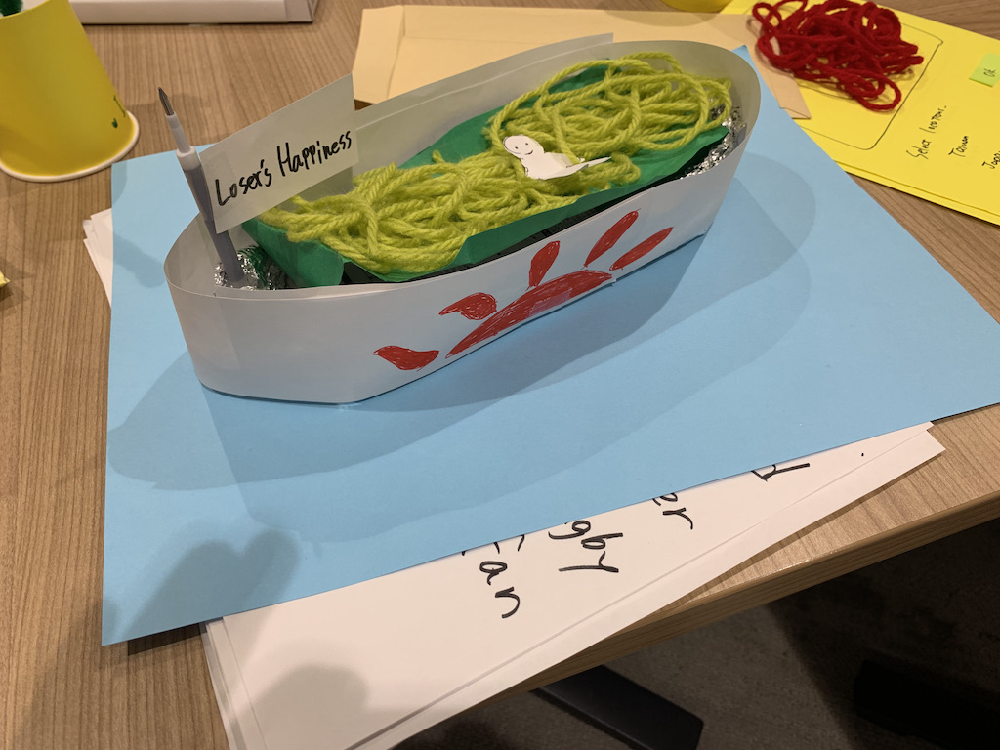

これからアイディアは素早くスケッチして視覚化していく習慣をつけていきます。（
例1、
例2、
例3、
せりなさんのスケッチ）
アイディアのスケッチは絵の上手さは問いません。とにかく考えていることを視覚化して、すぐに人と共有し、前進するためのスキルです。
人が書いたスケッチをバカにしたり、いじったりしないでください。その言葉の一つ一つが人から創造性を奪っていきます。
■折り紙や段ボールなどを使ったその場でのプロトタイピング


■もっと解像度を高めるためにデジファブの技術は有効
（２年生のデザイン演習3,4の内容をやった学生のプロトタイピング：デジファブも利用）
まちを楽しむ(有志ゼミ)
杉野真央さんのページ